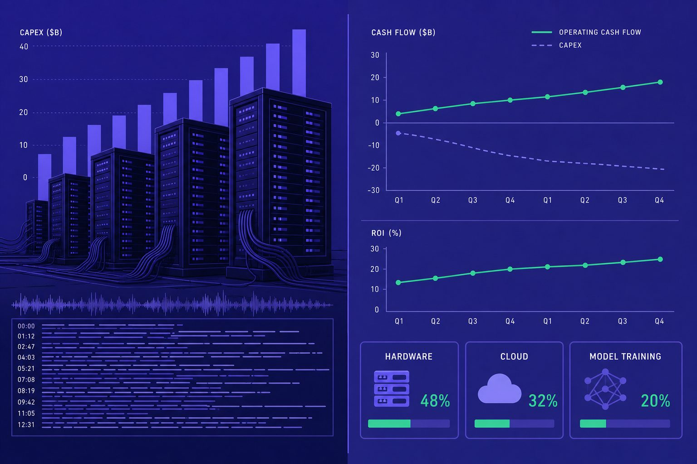
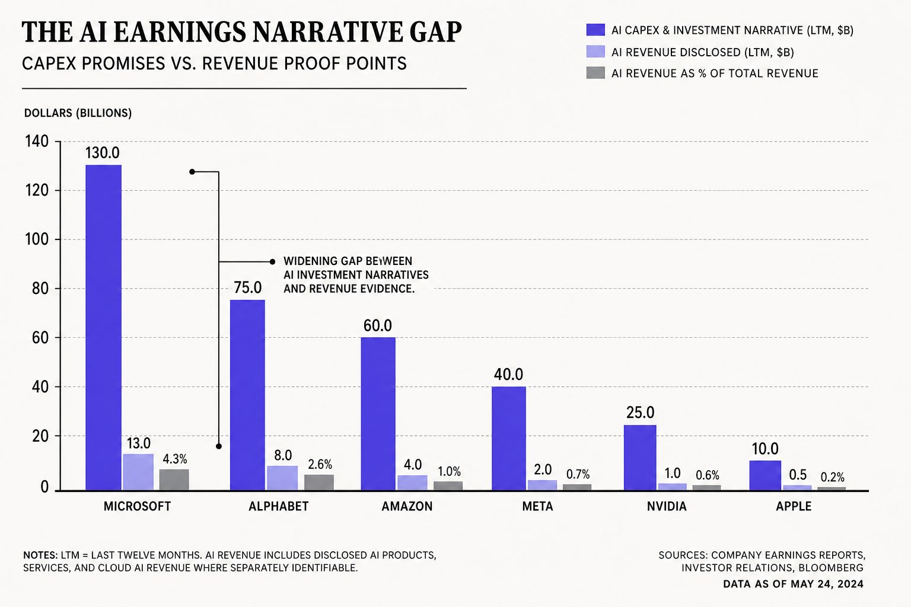
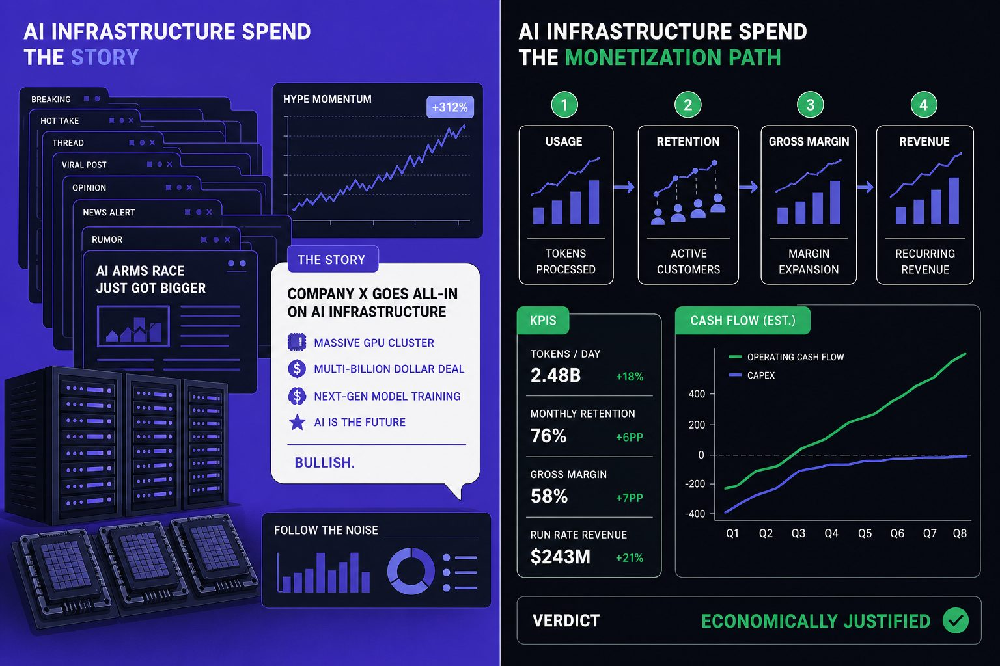
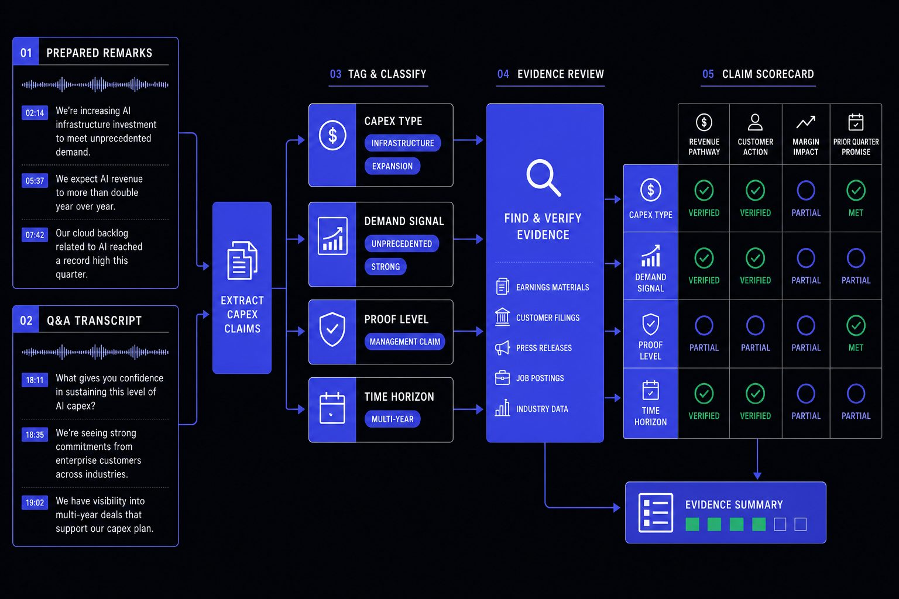

AI & Markets
AI Capex Signals That Reveal Real Monetization
AI capex is now one of the easiest ways to misread an earnings call. If you treat spending as proof of demand, you can mistake a costly buildout for real AI monetization. Across tech earnings, that risk keeps rising. According to AI mentions in earnings calls surges, even beyond tech, the largest jump in AI mentions came from energy, up 45%.
Table of Contents
We built this framework for investors and operators who want cleaner reads on AI earnings commentary. A Watch: Our call on tech companies’ earnings season report found 42% recession odds, which makes loose optimism even less useful. We will show you how to decode AI capex step by step and judge whether management is signaling demand, or managing the narrative.
Why AI Capex Confuses Investors on Earnings Calls

The symptom investors keep seeing
If you read enough tech earnings transcripts, the pattern gets familiar fast. You see big AI capex plans, confident language, and long vision statements. But you get very little on pricing power, real customer adoption, or when margins improve.
We hit that wall ourselves one night. Twelve tabs were open. One call praised demand for AI. The next praised discipline. Both sounded strong. Neither said which product was selling now, who was paying more, or how soon the spend could earn back.
That is the core symptom. The transcript is full of AI enthusiasm, yet thin on operating detail. Yahoo Finance noted that AI mentions have surged across earnings calls, which helps explain why headline language now travels faster than hard proof of AI monetization.
Why more spending sounds better than it is
Companies are increasing AI capex for several reasons. They need compute, chips, networking, and data center space. They also fear falling behind rivals. In AI earnings commentary, that mix often gets presented as strategic necessity rather than a set of separate bets.
That framing matters. Some spending is defensive. Some is experimental. Some supports products already in market. Those cases should not trade at the same weight. Yet quick takes often treat the number itself as the signal.
Research from Quartz shows 25% in a tech earnings context tied to tariff pressure, a useful reminder that capital plans can reflect outside constraints too. And Intellectia.AI highlighted a $40 figure tied to investment expectations around Alphabet, showing how spending narratives can become trading narratives before revenue timing gets clearer.
So, does higher AI capex mean stronger future revenue? Not by itself. It can signal capacity buildup, competitive fear, or a real product ramp. The key is linkage. You want to see spend tied to launch timing, customer proof, and a credible path to gross profit.
The real business impact of misreading AI capex
When readers misread AI earnings language, three mistakes follow. They overestimate near-term growth. They underprice execution risk. They anchor on story instead of unit economics.
A better analysis starts with one clean split: capacity first, demand second. Ask what was built, which product uses it, who has validated it, and when revenue should arrive. That same filter helps when reading pieces like CoreWeave's Backlog Tops $100 Billion - The AI Cloud Boom Explained, where backlog and monetization timing need separate judgment.
If you skip that step, you confuse spending with proof. If you make that split early, the call gets clearer fast.
Root Cause Analysis Behind Misleading AI Earnings Narratives

The real problem is not loud AI talk. The problem is weak testing. In AI earnings, investors often hear big plans but lack a repeatable way to link AI capex with proof of revenue. That gap is where hype survives.
Narrative management versus operating proof
You can tell commentary is mostly hype when the story runs ahead of the scoreboard. Management may sound clear, upbeat, and urgent. But the transcript still lacks hard markers like paid adoption, pricing lift, or margin impact.
We learned this the hard way. Forty-seven browser tabs open, transcript on one screen, notes on another, and still no clean answer. The issue was not confidence. The issue was missing proof points we could compare across quarters.
In tech earnings, operating proof beats polished language every time. Mention volume can support a theme, but it cannot prove AI monetization. Even market coverage that tracks rising AI mentions shows attention, not business quality, by itself (AI mentions in earnings calls surges, even beyond tech).
Three root causes behind fuzzy AI commentary
First, companies blend categories. Infrastructure spend, model training, and product rollout costs often sit under one broad AI label. That makes a single number look more strategic than it really is.
Second, timing creates confusion. Capex hits now. Revenue, usage, and margin gains may arrive several quarters later. That delay makes weak execution easy to hide inside a long-term story.
Third, disclosure stays selective. Executives share customer interest and demand anecdotes, then skip the metrics that matter most. You want paid seat conversion, inference economics, AI-driven average revenue per user, and guidance you can track against later.
This is where AI capex analysis needs discipline. According to Watch: Our call on tech companies’ earnings season, even headline numbers like $15 can frame a narrative without telling you much about monetization. The same source shows how eye-catching figures such as $3,500 can dominate attention while deeper operating questions go unanswered (Watch: Our call on tech companies’ earnings season).
Common misconceptions and failed shortcuts
One common mistake is assuming more AI mentions predict upside. They do not. Signal quality matters more than mention count, a point reinforced by coverage of traders betting on AI references before major calls (Traders Raise Bets on AI Mentions Ahead of Alphabet Earnings Call | Intellectia.AI).
Another failed shortcut is trusting management confidence on its own. Instead, check for measurable milestones and compare them with prior guidance. If you want a sharper filter, our guide on How to Evaluate New AI Models Without Getting Misled applies the same logic.
Our AI Capex Framework for Testing Real Monetization

We built this framework after a familiar failure. We had 47 browser tabs open. It was week three of tech earnings review. We still could not answer one simple question: does this AI capex support a credible path to monetization, or does it mainly support a better story?
What we built and why
That frustration shaped the framework. We wanted a fast, reusable test. Not a vibe check. Not a faith exercise. A method that helps you judge AI monetization from actual call language.
The goal is simple. We take management commentary and force it through operational questions. If spend has real intent, it should show up in clear buckets, clear revenue logic, clear timing, and clear proof. If it does not, the story usually gets fuzzy fast.
This matters because AI mentions keep climbing across earnings discussions, even beyond pure software names, as Yahoo Finance noted in its coverage of call transcripts and management commentary AI mentions in earnings calls surges, even beyond tech. In that setting, readers need a filter, not more enthusiasm.
The four signal tests we apply
Our first test is spend specificity. We look for precise categories. That includes data center expansion, GPU commitments, model serving, sales enablement, and customer-facing product integration. Vague labels like “AI investment” tell you almost nothing.
The second test is revenue linkage. We map each spending bucket to a monetization path. That path might be subscription upsell, usage-based pricing, enterprise deal expansion, or cost reduction that lifts gross margin. If management cannot connect spend to one of those routes, the odds of weak AI earnings quality rise.
The third test is timing discipline. We compare current language with prior quarter guidance. We want consistency on deployment dates, customer rollout, and expected payback. Slippage can be normal. Unexplained slippage is the warning sign.
The fourth test is proof density. We count hard indicators, not adjectives. That means paying customers, attach rates, recurring revenue contribution, workload growth, and inference cost trends. The more proof points management gives, the less room narrative management has.
This test matters most in capital-heavy stories. According to Watch: Our call on tech companies’ earnings season, one AI-related funding and infrastructure tab reached 15 billion. Big spending raises the burden of proof.
A simple scoring model readers can reuse
We score each test on a basic scale. Specificity, linkage, timing, and proof each get a low, medium, or high mark. Then we weight them together for a practical verdict.
1. Low specificity plus weak proof equals narrative heavy.
2. Strong specificity but early proof usually means build phase.
3. Strong scores across all four signals means monetization in motion.
You can run this model in minutes. Start with the transcript. Highlight every spending claim. Match each one to a revenue mechanism. Then compare management’s timing against prior statements. For a deeper read on model claims, see How to Evaluate New AI Models Without Getting Misled.
Research from Watch: Our call on tech companies’ earnings season shows another pressure point at 40 million. That kind of headline number can dominate attention. Our framework keeps you focused on what matters: whether spending is becoming revenue, margin lift, or neither.
From AI Talk to AI Proof

This framework changes the job from impression reading to evidence review. You stop reacting to volume and start testing claims. That shift matters most when a call sounds polished, upbeat, and packed with AI language but gives you little that maps to revenue, margin, or user behavior.
The practical win is simple. You capture prepared remarks and Q and A as separate inputs, because pressure often produces cleaner answers than scripts do. You tag each AI capex statement by what it actually refers to, then force a link between spending and a business outcome before giving it weight. If a company cannot connect spend to a product path, customer action, or financial line, the claim stays weak.
That one discipline cuts through much of the noise in tech earnings. Instead of treating every infrastructure build as proof of demand, you classify it. Instead of rewarding broad AI ambition, you ask for evidence. Instead of assuming momentum, you compare the current quarter with prior promises and check whether launches moved, margins improved, or AI earnings commentary got more concrete.
A lightweight version is enough to make this useful fast.
1. Capture the transcript in two blocks: remarks and Q and A.
2. Tag each line by capex type, demand signal, and proof level.
3. Score each claim only if it links to a business result.
4. Compare that score against the last quarter's guidance.
5. Flag unsupported claims for manual review.
You do not need a heavy system to start.
| Field | Purpose |
| Company | Track issuer history |
| Quarter | Compare progress over time |
| Capex category | Separate build from go to market |
| Revenue pathway | Identify how spend may pay back |
| Cited metric | Store proof, not adjectives |
| Expected timing | Test whether delivery slips |
| Confidence score | Keep judgment consistent |
A simple rules layer can handle the first pass. If a transcript line mentions spending but names no product, no buyer action, and no financial effect, flag it. If it includes a launch, adoption pattern, or margin driver, score it higher. That logic will not replace judgment, but it will slow down the false certainty that often follows AI heavy calls.
The result is better discipline. Before using this method, many readers treated AI capex as a shortcut to upside. After applying it, the signal improves because enthusiasm only survives when management supplies proof. You spend less time chasing narrative heat and more time following monetization markers that can be checked next quarter.
That is also how you prevent repeat mistakes. Keep a living scorecard. Compare each quarter with the last set of promises. And do not rate AI capex as a positive signal unless at least one clear monetization proof point appears in the record.
If you are tired of guessing which AI stories deserve conviction, make this framework your default filter on the next earnings cycle. Ready to build a sharper review process around AI monetization claims? Learn More.